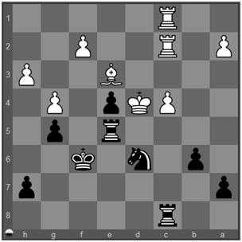

Captura da Defesa: Você concretiza o tema Captura da Defesa (Capturing the Defender) quando toma uma peça do adversário que defende outra peça ou uma casa, coisa que permite a captura dessa outra peça ou a ocupação dessa casa. Esse tema é também chamado de Remoção da Defesa mas, para evitar confusão com o tema Distração (quando a peça defensora é removida da casa em que está, mas continua presente no tabuleiro), preferimos utilizar a expressão mais específica Captura da Defesa.

1. h4
O rei branco está em apuros mas como explorar esse fato? Um xeque de cavalo em "b5" seria mate se essa casa não estivesse protegida pelo peão branco de "c4".
1... Txc4+
O negro sacrifica sua torre para capturar o peão defensor.
2. Txc4
O branco é obrigado a retomar
2... Cb5#
e com a defesa capturada, o negro pode dar xeque mate. 0-1